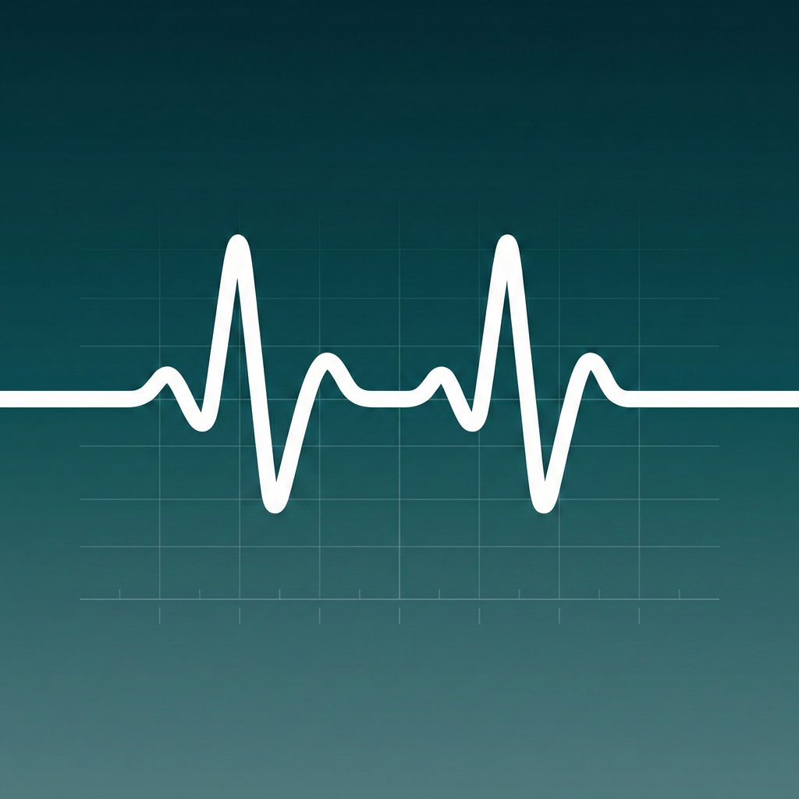

I’ve always been drawn to building systems that make hard things feel simpler and reduce inefficiency.
At Stanford, I studied biomechanical engineering and learned how thoughtful design can shape real-world outcomes.

An orthopedic surgeon mentored me and introduced me to the OR, and I was hooked by the privilege of caring for people at their most vulnerable.
At UCLA, medical training deepened my clinical instincts and showed me how much workflow affects patient care.
I took a year off from med school to join AgileMD (YC Summer 2011), where I helped build clinical guidelines and saw how software could support decision-making at the bedside.
I returned to Stanford for internal medicine and anesthesiology, where precision, teamwork, and workflow mattered every single day.

Years into attending practice, I notice so many friction points and inefficiencies: too many manual administrative tasks that take away time and attention from patients.
Then Claude removed my technical ceiling, and ideas that used to stall could finally become working tools.
I rebuilt internal scheduling workflows and started building tools like VAPOR Chart to reduce administrative drag for anesthesiologists.
I want to build what gives clinicians time back.